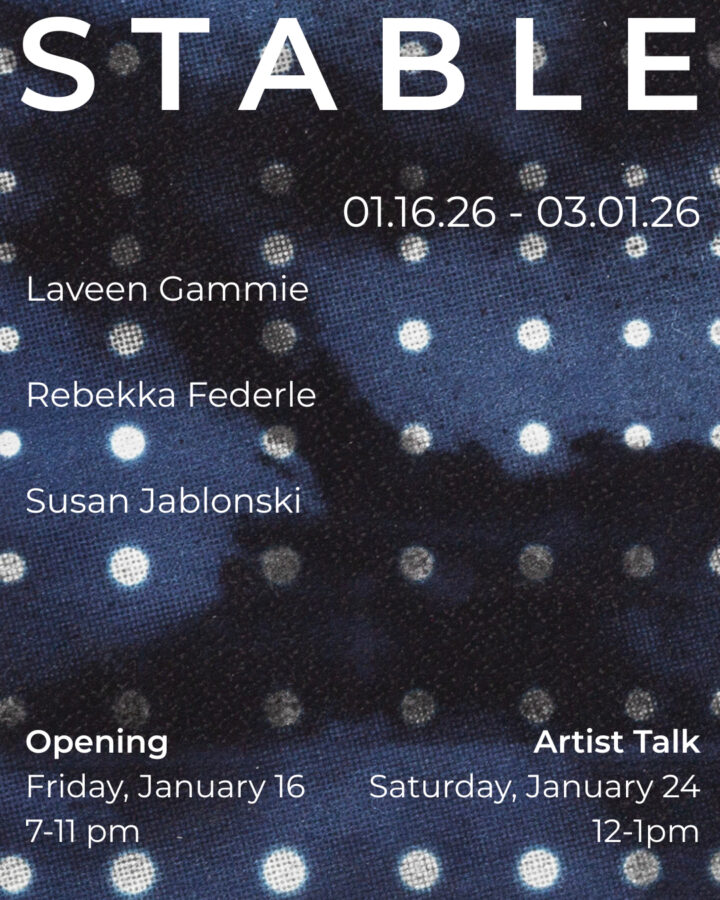

Stable
Heaven Gallery is pleased to present Stable, a show featuring Rebekka Federle, Laveen Gammie, and Susan Jablonski.
For all the space between the two, between that and you, far less merely is and far more has become. What you see is done, bound up in its own becoming with the ways another thought it might be. Something close to projection, molded by a rougher touch, comes into focus. The trick is to spot the seams.
Stable considers the work behind all that has already been, taking into question the labor underpinning our conception of the often taken for granted. In recent projects in sculpture and cyanotype, Rebekka Federle, Laveen Gammie, and Susan Jablonski prod the unruly edges relating bodies, structures, and the natural world. Together their work unsettles the presumed boundaries between fixed and fluid, instead foregrounding the mutual dependencies woven through acts of becoming. In each artist’s hands, product registers practice as the imprint of time, habit, and the concerted efforts troubling both.